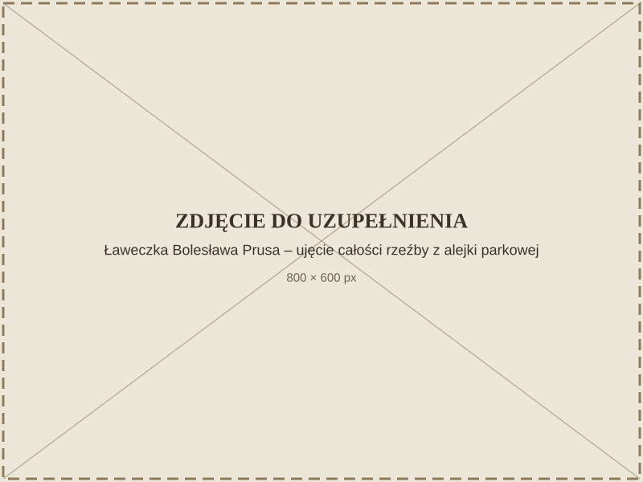
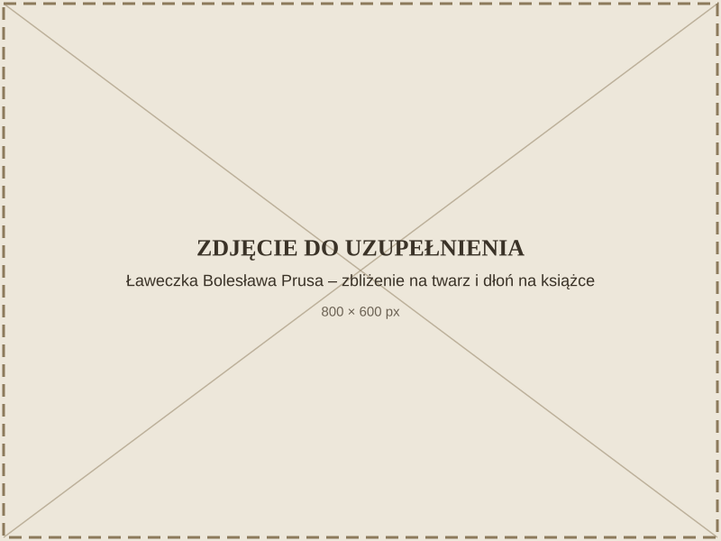

Ławeczka Bolesława Prusa
Nagranie
Wolisz przeczytać? Rozwiń transkrypcję
Ławeczka Bolesława Prusa powstała w 2002 roku z inicjatywy Haliny Bukowskiej, prezes Towarzystwa Przyjaciół Nałęczowa i kierowniczki Muzeum Bolesława Prusa, przy wsparciu finansowym Rady Miasta Nałęczów i ówczesnego burmistrza Wojciecha Wójcika.
Ojciec przygotowywał trzy projekty w gipsie, przedstawiające różne usadowienie na ławce sylwetki Bolesława Prusa. Wybrano jedną propozycję, następnie wspólnie wykonywaliśmy w glinie naturalnej wielkości model. Ja zajmowałem się wstępnym wykonaniem całości postaci, ojciec zajmował się całą głową — wykonał tę głowę, zajmował się szczegółami.
Po wykonaniu modelu i akceptacji przez zamawiających robiliśmy odlewy i pracowaliśmy nad formami gipsowymi — tych form było około 30. Następnie wykonaliśmy odlew gipsowy, który pojechał do odlewni w Rzeszowie — tam wykonano pomnik z brązu.
Początkowo ławeczka stała przed Pałacem Małachowskich, gdzie mieściło się wtedy Muzeum Bolesława Prusa. Obecnie ławeczka znajduje się również w bardzo atrakcyjnym miejscu — przy stawie, przed sanatorium księcia Józefa.
Jeżeli Państwo są w tym miejscu, to warto jeszcze odwiedzić palmiarnię. Znajdują się tam dwa popiersia wykonane przez ojca. Pierwsze z nich to popiersie Władysława Tatarkiewicza, filozofa, estetyka — pozował on ojcu na jednym z balkonów w sanatorium rolniczym. Druga rzeźba przedstawia popiersie dra Wacława Szczepińskiego, osoby bardzo zasłużonej dla Nałęczowa, lekarza naczelnego uzdrowiska.
Te i inne rzeźby znajdujące się w palmiarni powstały podczas pleneru rzeźbiarskiego „Postacie Nałęczowa” w 1978 roku.
Ławeczka Bolesława Prusa stanęła w Parku Zdrojowym w niedzielę 20 października 2002 roku, w 120. rocznicę pierwszego przyjazdu pisarza do Nałęczowa. Brązowa figura przedstawia siedzącego Prusa w charakterystycznym meloniku, z dłonią spoczywającą na książce — jakby na chwilę przerwał lekturę, by odpocząć w cieniu parkowych alei.

To jedno z dwóch dzieł na tej trasie, które Stanisław Strzyżyński wykonał wspólnie z synem Zbigniewem Strzyżyńskim, urodzonym w Nałęczowie w 1955 roku — tym samym, który opowiada o ojcu i jego twórczości w nagraniach towarzyszących temu spacerowi. Słuchając jego głosu przy tej rzeźbie, słyszymy więc relację nie tylko syna, ale i współtwórcy. Drugim wspólnym dziełem na trasie jest Kamień papieski.

W parku znajdują się dwa upamiętnienia Bolesława Prusa — popiersie oraz ta ławeczka. Nałęczów odwiedzał pisarz wielokrotnie, a uzdrowisko wywarło wpływ na jego twórczość.
Jak dojść
Mini-mapa jest obecnie niedostępna.